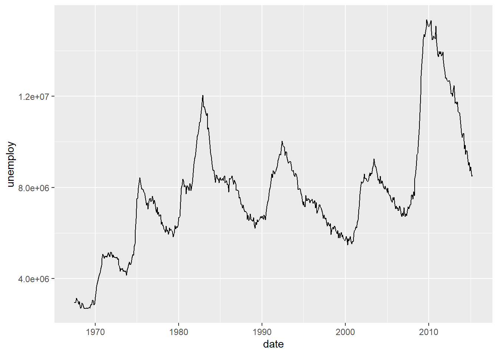
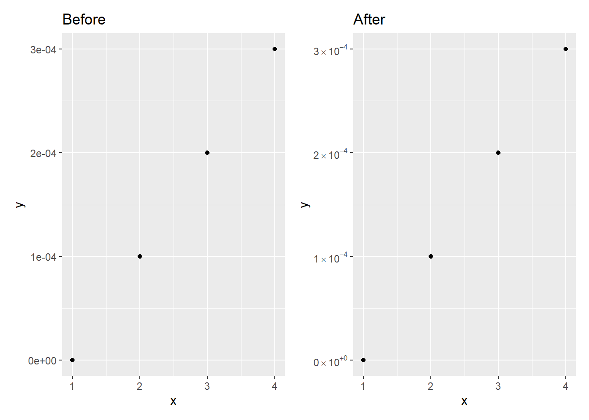
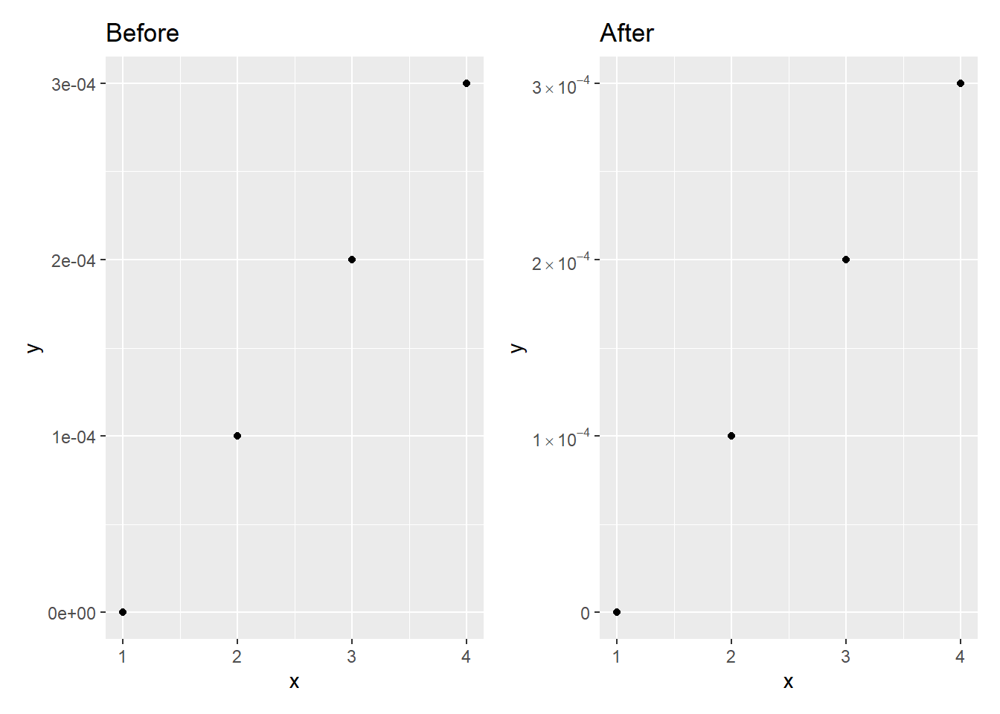

January 30, 2022 ggplot2 LaTeX
A while ago I was tinkering with a plot and realised that tweaking the scientific notation format would improve the look of the final image. We can start by loading our packages and producing an example plot to see what the problem we need to fix is.
library(tidyverse)
# change the unemployment figures so they aren't in thousands
economics <- mutate(economics, unemploy = unemploy * 1000)
ggplot(economics, aes(x = date, y = unemploy)) +
geom_line()
The scientific notation is perfectly sensible but the e+08 notation isn’t great. This led me to look for a way of changing the e+08 to a LaTeX notation of \(\times 10^8\). After a quick google I came to this stackoverflow post. This gives us
scientific_10 <- function(x) {
parse(text=gsub("e", " %*% 10^", scales::scientific_format()(x)))
}and we can use it with ggplot2 as such.
ggplot(economics, aes(x = date, y = unemploy)) +
geom_line() +
scale_y_continuous(label=scientific_10)This is pretty much perfect already but as you can see from the example in the stackoverflow post
library(patchwork)
x <- 1:4
y <- c(0, 0.0001, 0.0002, 0.0003)
dd <- data.frame(x, y)
before <- ggplot(dd, aes(x, y)) +
geom_point() +
ggtitle("Before")
after <- ggplot(dd, aes(x, y)) +
geom_point() +
scale_y_continuous(label = scientific_10) +
ggtitle("After")
before + after
the 0e+00 should really just be 0 and not need any work done. I also think that the gsub() notation isn’t that readable. Therefore I rewrote the function to strip out the e+00 from the 0 and use stringr functions and the pipe because I’d likely have the tidyverse loaded anyway.
scientific_10 <- function(x) {
scales::scientific_format()(x) %>%
str_remove_all("e\\+00") %>% # strip e+00 as we don't need it
str_replace_all("e", " %*% 10^") %>%
parse(text = .)
}This still works great with the economics dataset
ggplot(economics, aes(x = date, y = unemploy)) +
geom_line() +
scale_y_continuous(label=scientific_10)but it also fixes the issue with 0.
after <- ggplot(dd, aes(x, y)) +
geom_point() +
scale_y_continuous(label = scientific_10) +
ggtitle("After")
before + after
For anyone wanting to use base R here is a version with no stringr dependencies or the pipe.
scientific_10_base <- function(x) {
sci_form <- scales::scientific_format()(x)
# strip e+00 as we don't need it
zero_fix <- gsub("e\\+00", "", sci_form)
latex_not <- gsub("e", " %*% 10^", zero_fix)
# return parsed version
return(parse(text = latex_not))
}after <- ggplot(dd, aes(x, y)) +
geom_point() +
scale_y_continuous(label = scientific_10_base) +
ggtitle("After")
before + after
Clearly, this works just as well as the stringr version so feel free to use either. I find the stringr version easier to read and hopefully remember what it does when I come back to it at some point.